判断什么样的走势会彻底反转，什么样的会部分反转
- 一个走势如果启动走势一开始就很大，虽然表示它很强，但是同时也表示它容易被反转。一旦它第一浪调整完毕，后面如果
很快出现很大幅度的运动，一旦超过第一浪。那么就反转了。如果启动很慢，那么反而不容易反转。最多是部分反转。
当然最后运动幅度非常大，或者反向走势时间非常长。那么也会反转。
- 反转走势1：如果第二浪比前面的某一个浪更加激烈，那么这个走势会反转，而且反转的位置会越过前面被反转的开始
- 反转走势2：它的第二浪不如第一浪大，但是它在反弹后，快速回调反弹的开始，回调的速度比前进的速度快得多。
这样就反转了。这个是更加强大的反转。它会反转走势的开始。这个走势要在更大的走势没有要求的情况下，
如果更大的走势有要求。那么这个走势会不起作用。
- 反转走势3：已经出现了两段走势，但是它没有立刻反转，而是走出一个走势后，才彻底反转。这个走势一般比
前面的走势极点多一点点
- 反转走势4：三段下跌走势。要注意区分是两段到底了，还是不是如此。
- 下跌的快慢很重要。有一种比较慢的走势，看起来很慢，但是它连续不断的下跌，实际也很快。
- 但是也有一种开始下跌很快，后来用很长的时间来调整，而且第二段开始的时候，很慢。那么这样也不会全面反弹
- 这有一种特殊情况，就是第二浪虽然很小，但是是第一浪没有回调就产生的。这个经常在刚刚开盘的时间出现
- 反弹的样子也很重要，如果在底部或者顶部徘徊很久，超过一个小时，或者超过下跌的时间，那么全面反弹的可能很大
- 下跌过程中是否出现大的反弹对于反转很重要，如果下跌过程中突然出现了很大的反弹，比前面的反弹要高，那么
说明大盘出现了反弹的力量，这样一旦再次出现了新低，那么就是真的反弹了。上涨的过程也一样。
这种情况应用在第二段走势不比第一段强的地方。
下跌的第二段，连续缓慢运动，造成双底。形成反转
下跌或者上涨出现了两段走势而反转
快速运动后，反转情况不一样，造成了反转的情况不一样。
运动过程中出现了部分反转
一个走势的最后阶段出现了部分反转
反转走势2
第一浪幅度很大，很强，结果容易反转
先部分反转后，再次全面反转
先部分反转后，再次全面反转
TOP
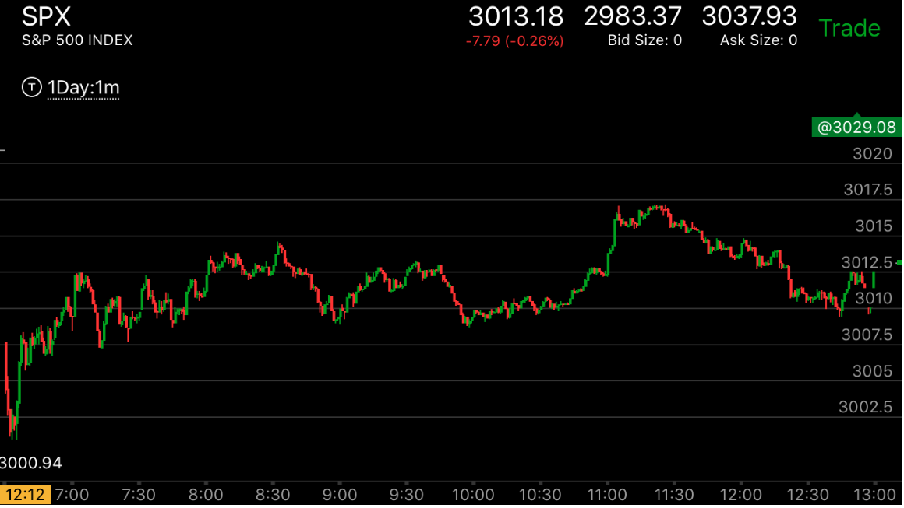
图示：8：50的附近，出现了反弹加跨越的走势。就是说8：50的反弹比8：40的反弹要小，
而且创走势新低后，又返回了。没有形成跨越走势。这样，它就开始反弹了。但是这个反弹只能反转从8：30开始的下跌的一部分。
因为它反的是反跨越走势。9：30它超过前面的走平点后，开始走低。它走低的速度很快，超过了前面下跌的速度。形成了加速走势。
这个加速是对着8：40开始的下跌加速的。所以这个就是全面反弹了。它一定会超过8：30的高点的。
反转走势2
TOP

图示：开盘下跌，5分钟后，反弹继续大跌。但是这个第一浪不如第一浪大，
不能算反转。然后上涨很久，6：50短时间下跌回到原位，而且在底部停留。
说明它一定会反转了。奠定了反弹的基础，它一定会上涨的。

图示：7：40反转后，虽然一开始就幅度很大。但是它随后反弹，不断走平，速度很慢，
说明这个不是第一浪。第一浪应该是从8：50开始从3010开始的。它连续两个台阶。9：00开始的跨越走势，速度很慢，
直到过了低点后，才加速下跌。而9：10开始的下跌，很快就越过了低点，形成了加速下跌。这样就反转了。
但是它的反转只能反转3008开始的跌势。反转后，9：10是第一浪上涨，4个点，9：50是第二浪上涨。4.5个点。
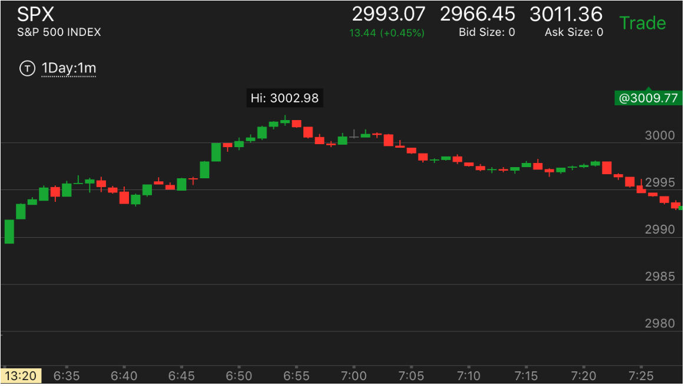
图示：开盘后，连续上涨，下跌一个bar，再次上涨加速。
然后下来。6：40反弹后，回到原位。速度比下跌更快，但是可以看到，它到了高点就立刻下跌，
而下跌的时间也就3分钟。而回到高位，则应该比这个时间更低，但是不是如此。所以没有反转。
一个走势的最后阶段出现了部分反转
TOP
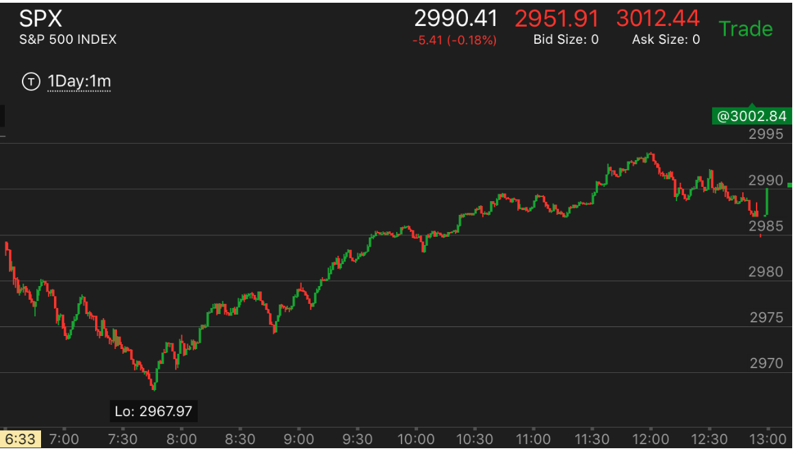
图示：开盘后，下跌。出现了反转。7：40开始第一浪上涨。
要看到它的第一浪上涨很强。一下涨了7个点。而且在高点停留几分钟。表示这6个点不打折的。
后来的上涨，不断的拉回。所以可以稳步前进。到11：20，它出现了一个三段下跌后，开始一个
小的上涨走势，然后走平很久。然后开始不断的上涨。后面的上涨幅度都超过了开始。这样可以
想象，它一旦反转，一定会低于前面走势开始的低点。它后来果然低于低点2986
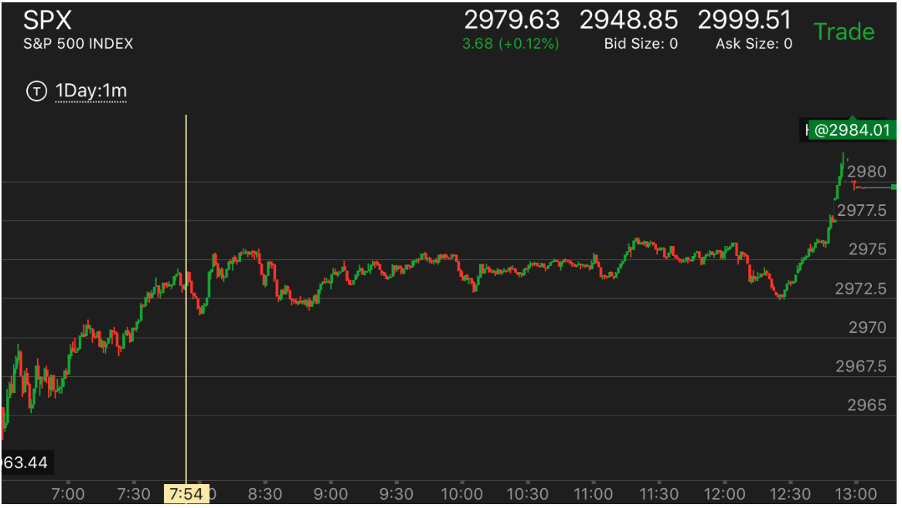
图示：10：00出现了第一段上涨。11：00出现了第二段。而且比第二段幅度大。
说明要反转了。它必须低于10：00开始的低点。它果然低于10：00开始的低点。但是大盘处于升势。既然这个走势结束，应该
立刻做多。它一定会越过前面高点。
第一浪幅度很大，很强，结果容易反转
TOP
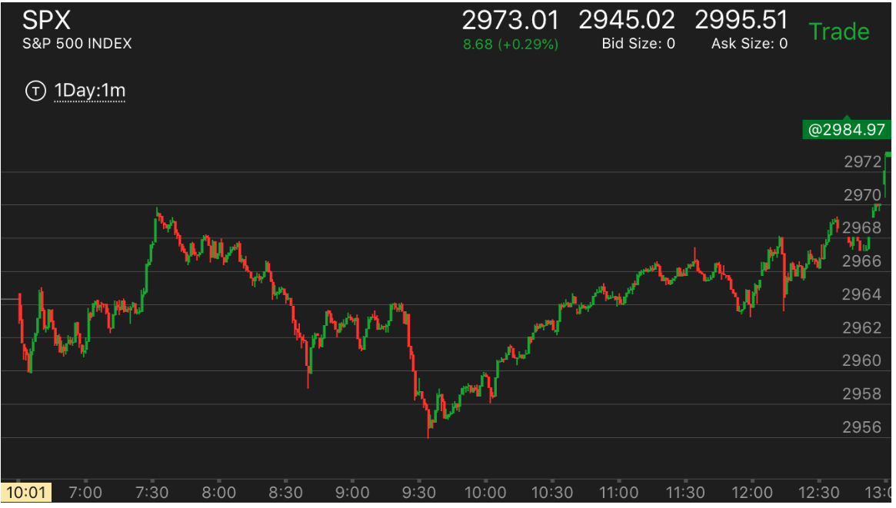
图示：开盘后，冲高后，立刻拉回，然后出现了一个两段下跌走势。它的第一浪很大。
虽然很强，但是也说明了它容易被反转。
7：20它大涨，涨的速度超过了开盘10分钟时候的上涨。说明上涨结束。它未来下跌一定会低于开盘的低点。
7:30开始的下跌，很快就出现了第一浪下跌。幅度比较大。
8：30它下跌后，快速反弹。说明没有到达底部。9：20它再次快速下跌。这次下跌的速度和幅度都很大。说明再次反转了。而它上涨的时候，
始终的非常缓慢，而上涨过程中的下跌总是很快。这样不断的上涨。最后超过了原来的高点。一天之内两次反转。
11：20出现了一个横向的5浪。但是这个横向5浪的上涨很慢，下跌很快。说明不是要跌的样子。

图示：开盘后第一浪上涨，幅度很大。震荡后，它再次上冲。虽然每次冲高幅度不大。
但是也比较大。7：05开始的冲高加起来，已经超过了第一浪。已经具备了反转的走势。7：40它出现了连续缓慢上涨的走势。
上涨的速度超过了前面上涨的速度。这样就形成了加速上涨。形成了反转。7：50开始的下跌。第一浪很大。
后面缓慢下跌后，再次加速下跌。速度也很快。这样也具备了反转的动力。但是它需要创新低。然后再次在8：50出现了也给很小的加速走势。
然后反弹很小，走平很久。这样就形成了升势。这个升势启动很慢。不会很容易反转。
下跌过程中出现了部分反转
TOP
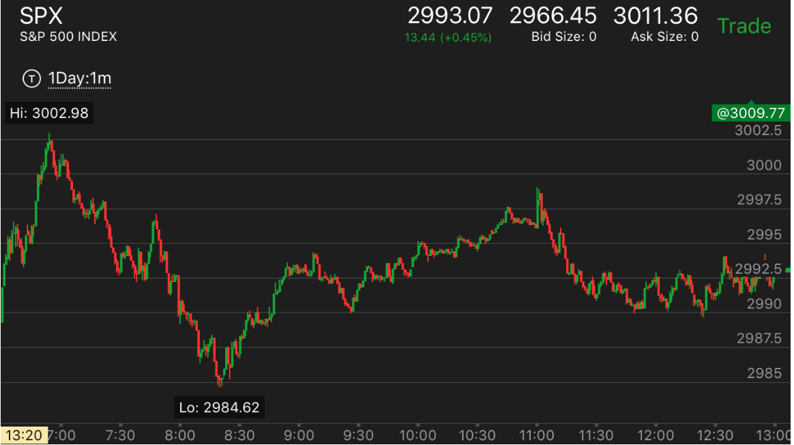
图示：8：20它下跌的时候，在底部走平。而不是像前一个下跌的时候，
倾斜反弹。而且它在8：30反弹的时候，越过了关键点。这样表示反转了。但是它下跌的幅度不如7：20开始的
第一段走势。这样只能是部分反转。所以它在反弹的时候，不会高于2998，但是会高于2997. 后来有短暂的
超过2998.这个不能算超过。9:20开始上涨的第一浪。这个第一浪很大。10：30开始的上涨，它的幅度比10：00
开始的上涨要大，但是比9：20开始的第一浪小。所以它反转后，不会低于2990。但是会低于2992.5.
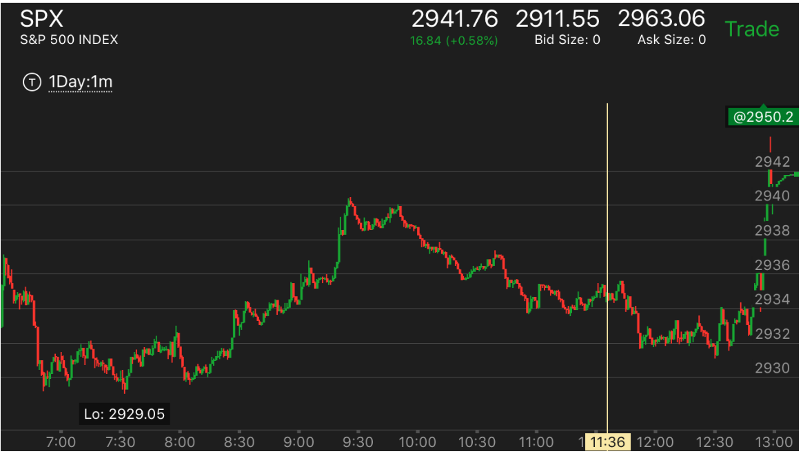
图示：开盘后，冲高下跌，出现了两段下跌走势。可以看到6：50下跌的速度很快，超过了第一浪。
说明反转了。这个就是全面反转。8：00开始上涨。它突破了前面的高点。这时的分析，应该把8：25的上涨看作第一浪，
那么9：10的第二浪超过了第一浪。再次反转。但是这个反转只能是反到8：25上涨前。9：30开始下跌第一浪，
直到11：40开始了第二浪下跌。这个下跌速度比开始下跌速度快。而且恰好反转了8：25开始的上涨。这时下跌结束。
可以想到，未来一定超过前面的高点。这时期权很便宜，可以买期权做多。
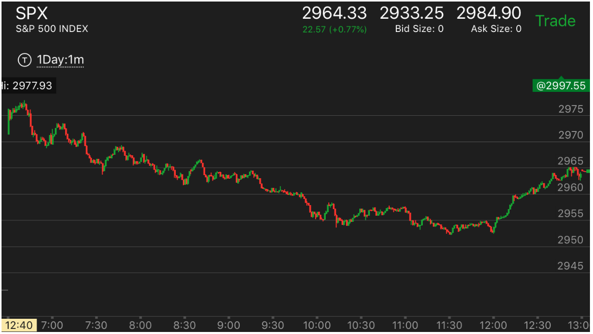
图示：8:15开始，出现了三段转折走势。形成了一个底部。它开始反转。结果它反弹的速度很快。
很快就超过了高点2966，反转了这个走势，继续下跌。8：35它下跌的速度很快，但是到了前面低点附近，反而慢下来，开始长时间走平。
这样可以断定，它一定会低于前面的低点。9：10开始下跌，它走出了一个两段走势。9：45的第二段比第一段激烈。
10：00更出现了上涨后，快速下跌的走势。这样走势已经反转了。但是它仍然需要一个机会。10:30冲高后，走平很久，
然后下来，在低点走平。从相对论分析，它一定会创新低。11：30创新低后，它跨越了2954这个关键点，
说明反转了。而看看前面的反转对象，它应该是要反转从2965开始的下跌走势。最后它一路上涨到了2965.
快速运动后，反转情况不一样，造成了反转的情况不一样。
TOP
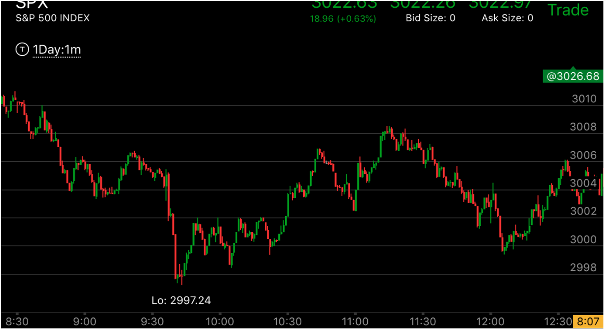
图示：8:55的新低和9：00的新低，都是立刻反弹。但是9：00的新低要更弱一些。乃至它造成的反弹
更强。9：40出现了大幅下跌，这个反弹非常的弱，在底部停留4分钟。这样，它至少应该反转到前面的反弹之上。而3004是关键点，
它越过了3004，说明确实部分反转了。再观察10：25的上涨和10：40的上涨。10：40的上涨幅度小，而且立刻回调，这样比
前面要弱，说明这个走势没有结束。它回调后，必定会超过10：40上涨的最高点。再看11：50的下跌和12：10的下跌。11：50的下跌
立刻反弹，而12：10的下跌则反弹很小。这样再次反转。但是这个反转也是部分反转，它反转到了11：50下跌的开始就结束了。
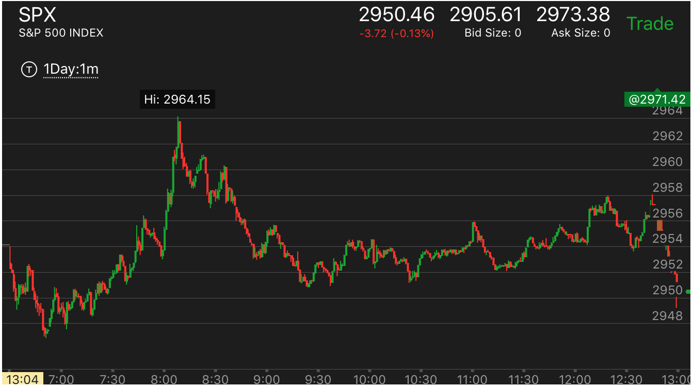
图示：8:00快速上涨后，反转了。它的下跌速度太快了。下跌后，开始走平很久。这样就形成了一个真空。10：30开始上涨，走平，
冲高后，快速拉回。越过了走平点。这样的走势是典型的升势。它上涨后，直到收盘前才下跌一些。
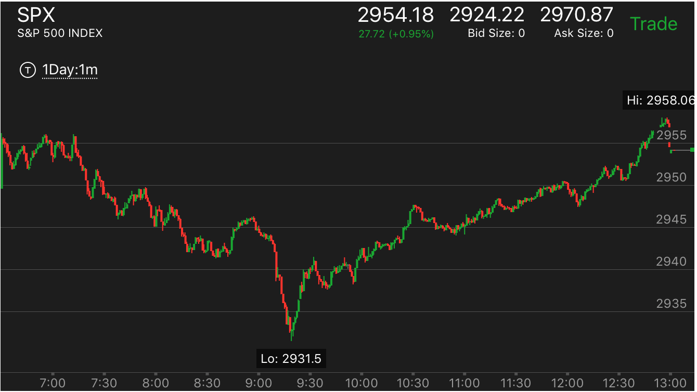
图示：9：20快速下跌后，它除了开始快速上涨外，后面一直非常的缓慢的上涨。这样就可以持续大涨。创新高形成全面反转。
下跌或者上涨出现了两段走势而反转
TOP
很多时候，非常的简单，出现了两段走势，没有什么加速，就是反转了。

图示：
1. 开盘出现了两段下跌，就反转了。
2. 然后上涨的时候，在2685附近出现了两段上涨。就反转了。
3. 2645附近，下跌的时候，出现了加速，然后双底，双底其实就是一个两段下跌走势。然后就反转了。

图示：
1. 6:50开始第一段上涨，走平后，8：04开始第二段上涨。但是它的顶部形状不好。稍微创新高后，就开始下跌了。这个走势结束非常的平淡。但是也是一个两段走势就结束了。
2. 但是它并没有真正的反转。但是光是填补真空也足够造成10几个点的运动了。这个其实可以看成是反常两段走势。所以虽然没有反转，但是也大幅回调了。
下跌的第二段，连续缓慢运动，造成双底。形成反转
TOP
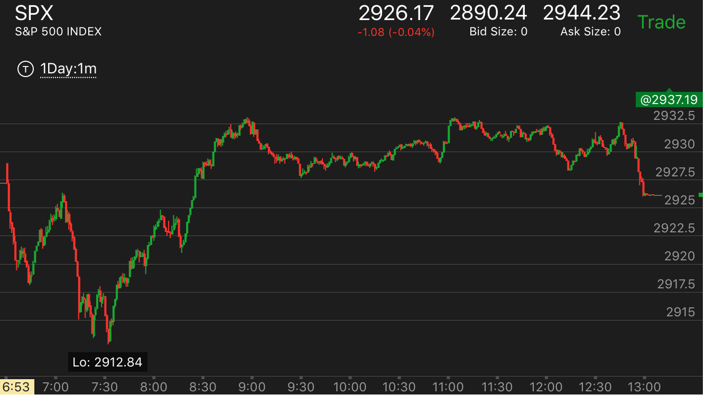
图示：
1.开盘后出现了第一浪下跌，大幅反弹后，出现了第二浪下跌。这次没有立刻反弹，而是小幅反弹后，再次走低，在底部形成了双底。
这样就是一个两段走势完成了。虽然它的第一段反弹时间很长，反弹幅度也很大。
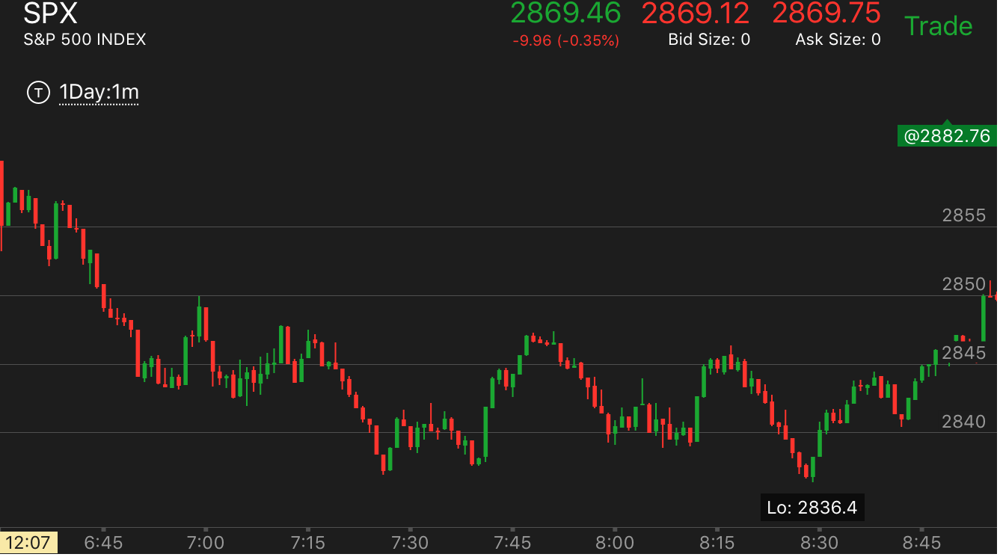
图示：
1.刚刚开盘出现了反常两段走势。6：40它快速反弹后，开始下跌。它的下跌幅度很大，速度也很快。所以其实这时就应该反弹了。
但是一个走势，一定要在相对的运动中实现反转。
2. 6：50它出现了新低。快速冲高后，下来，再次出现了新低。这样说明它会继续下跌。7：15的下跌其实不如第一段下跌。
所以这个不能用两段走势来分析。它的下跌实现了跨越。而且在底部反弹很弱，说明这个下跌坐实了。
3. 7：45它反弹很高。说明这时，大盘出现了反击的力量。和原来不一样了。

图示：
1.6:50开始的下跌，速度很快。7：10算是一个走平，然后出现了第二段下跌。8：05出现了加速下跌。
2. 大盘在底部一个多小时，说明非常的结实。
3. 8：50开始上涨，非常的缓慢，它不断的走平，拉回。
4. 11：10开始大幅拉回，走平，然后大涨。